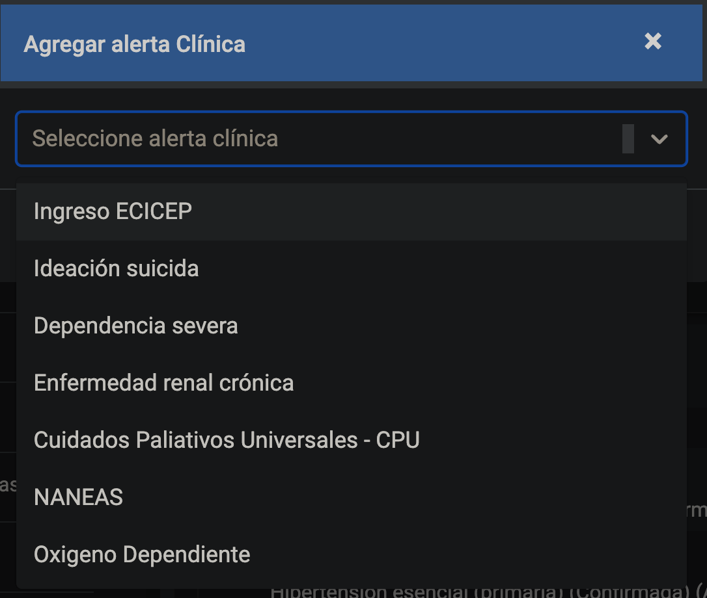
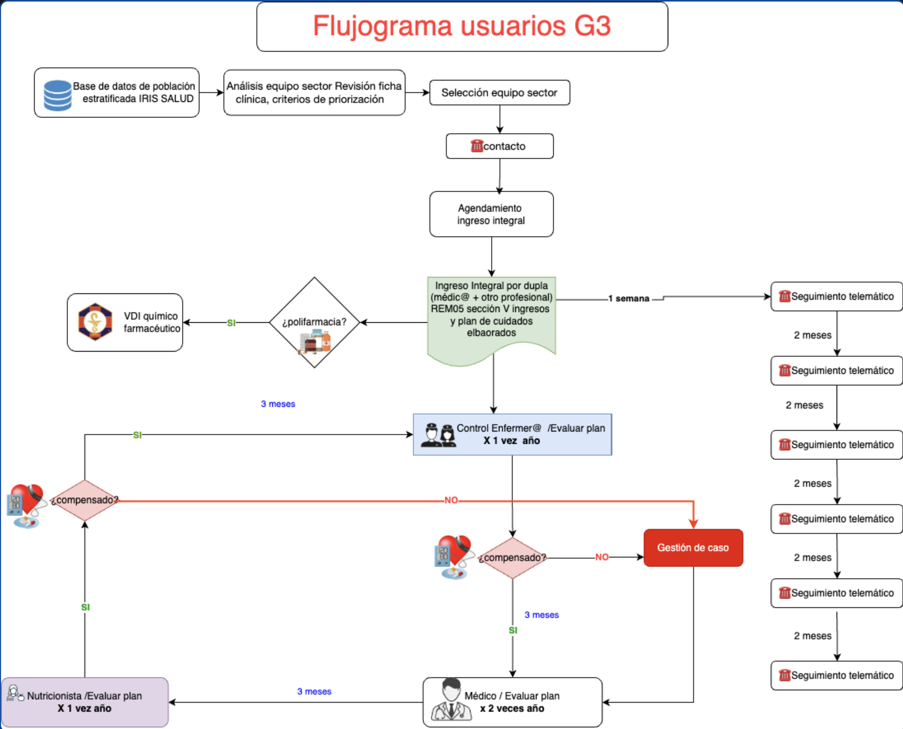
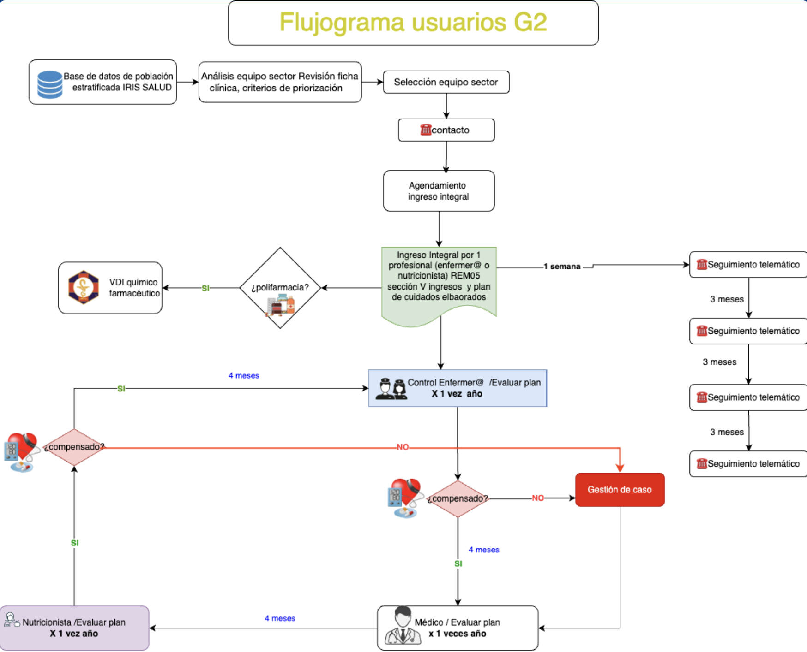
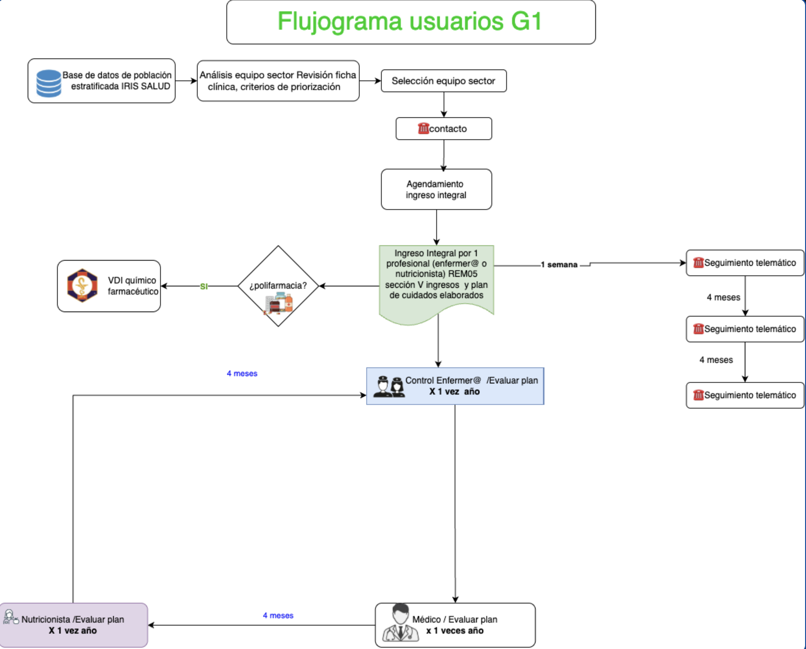

MANUAL INDUCCION ECICEP 2025
Introducción
El Ministerio de Salud, el año 2020, publica el marco conceptual de la Estrategia de Cuidado Integral Centrado en las Personas (ECICEP), para la promoción, prevención y manejo de la cronicidad en contexto de multimorbilidad, basada en los principios del Modelo Atención Integral de Salud Familiar y Comunitaria (MAIS).
Antecedentes
En Chile, al igual que en muchos otros países, las enfermedades crónicas no transmisibles (ECNT) representan un problema creciente tanto en su magnitud como en su complejidad. La mayoría de la población adulta vive con dos o más enfermedades crónicas, lo que se conoce como multimorbilidad. Las personas con multimorbilidad tienen una mayor tasa de mortalidad ajustada por edad y utilizan más recursos del sistema de salud. Además, enfrentan un mayor riesgo de hospitalización y estadías hospitalarias más prolongadas en comparación con quienes padecen solo una condición crónica. Por estas razones, es urgente modificar y mejorar la forma en que los profesionales de la salud abordan el tratamiento de estos pacientes. Este texto puede servir como una introducción para concienciar a los nuevos funcionarios de salud, sobre la importancia de un enfoque integral y actualizado en el tratamiento de pacientes con enfermedades crónicas.
Objetivo
Comprender los lineamientos, procesos y registros de la Estrategia de Cuidado Integral Centrado en las Personas.
PROCESO ESTRATEGIA CUIDADO INTEGRAL CENTRADO EN LAS PERSONAS

Subproceso: Base de datos población en control estratificada
Responsable: SOME
Objetivo: Generar una base de datos con los pacientes crónicos, estratificada según grupo de riesgo (G0, G1, G2 y G3).
Entrada: Base de datos población en control.
Salida: Base de datos estratificada, según grupo de riesgo, de los pacientes crónicos en control.
Actividades: Proveer listado estratificado por grupo de riesgo a los equipos de sector.
SOME
Base de datos de población estratificada IRIS Salud: Almacenar y organizar la información de la población objetivo, clasificándola según criterios preestablecidos (edad, condiciones de salud, dependencia, etc.).
Programar el ingreso del usuario al ECICEP, coordinando los aspectos logísticos y administrativos necesarios.
Equipo Sector
Equipo interdisciplinario del sector (médicos, enfermeras, asistentes sociales, etc.), el cual través del análisis de la información clínica de los usuarios preseleccionados, deben aplicar criterios de priorización para determinar quiénes son los más.
TENS SECTOR
Contactar a los usuarios seleccionados para informarles sobre el ECICEP, explicarles el proceso de ingreso y evaluar su interés en participar.
TENS ECICEP
Su función prioritaria es realizar el seguimiento telemático, convirtiéndose en un nexo entre el usuario y el equipo de salud, favoreciendo el acceso y la continuidad de la atención.

Subproceso: Selección de usuario
Responsable: Equipo de sector
Objetivo: Generar puerta de entrada de los usuarios a la estrategia.
Entrada: Base de datos estratificada, grupo de riesgo.
Salida: Usuarios que ingresan a ECICEP o eligen control habitual.
Actividades: Revisión ficha clínica, criterios de priorización, dupla de atención, estrategia ECICEP, control habitual.
Proceso de Selección de Usuarios
Propósito
El proceso de selección de usuarios tiene como finalidad generar una puerta de entrada estructurada para que los usuarios accedan a la estrategia de atención integral según su estado de salud, necesidades y prioridades.
Responsable
El equipo de sector de salud será el encargado de implementar y supervisar este proceso, asegurando el cumplimiento de los criterios establecidos.
Descripción del Proceso
- Entrada:
Se utiliza una base de datos estratificada que agrupa a los usuarios crónicos según su riesgo y estado de control, proporcionando una visión clara para la priorización.
- Análisis:
El equipo de sector realiza una revisión exhaustiva de la ficha clínica de cada usuario, considerando los antecedentes y características específicas. Esto incluye aplicar criterios definidos en la guía ECICEP para determinar la prioridad de atención.
- Subprocesos:
- Revisión de Ficha Clínica: Evaluación detallada de antecedentes médicos del paciente para identificar necesidades específicas.
- Criterios de Priorización: Identificación de pacientes prioritarios que requieren atención inmediata según los criterios establecidos en la guía ECICEP.
- Dupla de Atención: Participación de un equipo multidisciplinario, conformado idealmente por médico y nutricionista, o en su defecto, otros profesionales capacitados según las necesidades del usuario.
- Estrategia ECICEP: Usuarios seleccionados para ingresar a la estrategia de cuidado integral, de acuerdo con la tabla de priorización.
- Control Habitual: Usuarios no priorizados o que rechazan la prestación, quienes continúan con su control habitual según los programas a los que pertenezcan.
- Salida:
Como resultado del proceso, los usuarios serán clasificados en dos grupos:
- Usuarios que ingresan a la estrategia ECICEP.
- Usuarios que optan por el control habitual.
Resultados Esperados
Este proceso busca garantizar la correcta asignación de los recursos y una atención eficiente, priorizando a quienes presentan mayor riesgo o necesidad, y promoviendo el acceso equitativo a los servicios de salud integral.
Recomendaciones
- Mantener actualizada la base de datos de usuarios.
- Capacitar periódicamente al equipo de sector sobre los criterios de priorización y uso de la guía ECICEP.
- Realizar auditorías regulares para evaluar la eficacia del proceso y su alineación con los objetivos estratégicos.

Subproceso: Contacto inicial con pacientes priorizados ECICEP
Responsable: TENS / SOME
Objetivo: Realizar la oferta de la prestación al usuario y citación si corresponde.
Entrada: Base de datos estratificada.
Salida: Hora de atención agendada o continuar en controles convencionales.
Actividades: Contacto inicial, agendamiento, retorno a controles convencionales.
Proceso de Contacto Inicial con Pacientes Priorizados ECICEP
Propósito
Establecer un contacto directo con los pacientes priorizados por el equipo de sector, con el fin de ofrecerles la prestación correspondiente dentro de la estrategia ECICEP y coordinar su ingreso, o bien derivarlos a controles convencionales si el ingreso es rechazado.
Responsable
El personal TENS/SOME es responsable de realizar este contacto inicial y gestionar la oferta de atención según los lineamientos establecidos.
Descripción del Proceso
- Entrada:
El proceso comienza con una base de datos estratificada que clasifica a los usuarios crónicos según su grupo de riesgo. Esta información es generada por el equipo de sector durante la etapa previa de priorización.
- Subprocesos:
- Contacto Inicial: El personal se comunica telefónicamente con el usuario para informarle sobre la estrategia ECICEP, explicar el funcionamiento del programa y resolver dudas. Esta etapa es fundamental para fomentar la aceptación del usuario.
- Agendamiento: Si el usuario acepta participar, se le agenda una hora para la atención clínica integral y se registra la cita en el sistema correspondiente (por ejemplo, Rayen).
- Retorno a Controles Convencionales: En caso de que el usuario rechace la oferta, se le garantiza la continuidad de su atención habitual en los controles convencionales del sector, manteniendo la calidad en el seguimiento de su salud.
- Salida:
- Una cita agendada para el ingreso integral en la estrategia ECICEP, incluyendo la elaboración del plan de cuidado correspondiente.
- Alternativamente, la confirmación de que el usuario continuará bajo controles convencionales en su sector.
Resultados Esperados
- Incrementar la adherencia de los pacientes priorizados a la estrategia ECICEP.
- Coordinar eficazmente las citas y optimizar el flujo de atención en el sistema de salud.
- Garantizar la continuidad de atención a los usuarios que opten por controles convencionales.
Recomendaciones
- Capacitar al personal TENS/SOME en habilidades de comunicación para garantizar que el mensaje sea claro y empático.
- Utilizar sistemas de registro como Rayen de manera eficiente para documentar las citas y rechazos.
- Realizar auditorías periódicas para monitorear la tasa de aceptación y rechazos, identificando oportunidades de mejora en el proceso.

Ingreso integral y seguimiento clínico
Evaluación inicial, seguimiento telefónico mensual (TENS), controles de enfermería y médicos según compensación del usuario, evaluaciones periódicas por nutricionistas o farmacéuticos si corresponde.

Subproceso: Atención Integral en Dupla
Responsable: Médico y profesional no médico
Objetivo: Atención clínica integral para pacientes con multimorbilidad.
Entrada: Agendamiento.
Salida: Solo cuando se traslada o fallece.
Actividades: Atención presencial, visita integral, control, seguimiento.
Atención Integral (Box/Visita Integral): El proceso inicia con la atención del paciente, ya sea en un box o a través de una visita integral.
Ingreso Integral (REM 05 Sección V): Se realiza el ingreso integral del paciente, registrando los datos y elaborando un plan de cuidado de acuerdo a “Pauta de ingreso ECICEP”.
Proceso de Atención Integral en Dupla
Propósito
Brindar atención clínica integral y personalizada a pacientes con multimorbilidad y mayor nivel de complejidad, mediante la intervención coordinada de un médico y un profesional no médico, garantizando la continuidad del cuidado en diferentes contextos.
Responsable
El equipo multidisciplinario conformado por una dupla de médico(a) y profesional no médico (enfermero(a), nutricionista o similar), según disponibilidad y necesidad.
Descripción del Proceso
- Entrada:
Este proceso inicia con el agendamiento de los pacientes G3, quienes han sido previamente priorizados mediante criterios clínicos y contactados para recibir atención integral.
- Subprocesos y Actividades:
- Atención Presencial en Box: Ingreso integral del paciente realizado por la dupla en un espacio clínico. Se registran las actividades y planes de cuidado según REMA 05 Sección V.
- Visita Integral: Atención integral en el domicilio del paciente cuando este no pueda asistir al establecimiento de salud. Este servicio asegura la continuidad y accesibilidad al cuidado. (REMA 05 Sección V).
- Control Regular y Seguimiento:
- Evaluación Inicial: Análisis de polifarmacia. En caso de detectarse, se deriva al químico farmacéutico para optimización del tratamiento.
- Seguimiento Telemático: Realizado cada dos meses para garantizar la continuidad del monitoreo y la adherencia al plan de cuidado.
- Control Presencial: Además del ingreso, el usuario con riesgo G3 tendrá 2 controles con médico y al menos uno con enfermero(a) y un control con nutricionista al año.
- Gestión de Caso: Si el usuario no está compensado, se activa un proceso de gestión de caso con atención intensiva y mayor frecuencia en controles, asegurando una intervención multidisciplinaria.
- Salida:
Este proceso culmina únicamente en los siguientes casos:
- Cuando el usuario se traslada a otro centro de atención.
- Fallecimiento del usuario.
Resultados Esperados
- Proporcionar una atención integral de alta calidad a pacientes con multimorbilidad y mayor nivel de riesgo.
- Reducir complicaciones mediante un monitoreo constante y controles frecuentes.
- Garantizar la continuidad del cuidado y mejorar la adherencia al tratamiento.
- Optimizar el manejo de polifarmacia y otros factores de riesgo mediante la intervención multidisciplinaria.

Ingreso integral por grupo de riesgo
Registro de actividades según riesgo del paciente: G1 (leve), G2 (moderado), G3 (alto).

Planes de cuidado integral por grupo
Plan de cuidado personalizado según clasificación de riesgo, incluyendo atenciones para condiciones específicas (IAM, AVE, amputaciones, etc.).

Resumen de actividades registradas
Listado automático de actividades: ingreso integral, plan cuidado, salud mental, pie diabético, salud cardiovascular.

Formulario de Salud Cardiovascular Integral
Formulario clínico disponible para pacientes adultos con riesgo cardiovascular elevado (etiqueta G3).
Considerando que para la implementación de la estrategia y su consolidación deberá ocurrir una transición desde la lógica programática a la centrada en la persona, que no será inmediata, deberá efectuarse el registro de la estrategia y el de controles y actividades definidas por programa, según corresponda. Se debe registrar todas las prestaciones realizadas al usuario, en el ítem “actividad”, dentro del ingreso a la estrategia ECICEP, vale decir , si la atención actual deriva en consulta de morbilidad y/o salud mental, estas deben registrarse así como también el formulario de Salud Cardiovascular integral si correspondiese.
>
Registro Formulario Salud Cardiovascular integral
Si el usuario tiene patologías cardiovasculares debe completarse el formulario de Salud cardiovascular integral accediendo en el ítem formulario, luego en “clasificación” seleccionar adulto y en “formulario” seleccionar “Salud cardiovascular integral”
REM A01; Sección F: Controles Integrales de Personas con Condiciones Crónicas: Se registra el control integral en la sección correspondiente para pacientes con condiciones crónicas. De acuerdo a:
- Continuidad de la Atención: Se asegura la continuidad de la atención del paciente, programando y realizando controles integrales periódicos.
- Control Integral Presencial: Se lleva a cabo un control integral presencial del paciente para evaluar su estado de salud y el cumplimiento del plan de cuidado.
- Usuario Descompensado: Se deberá derivar a la prestación GESTIÓN DE CASO ECICEP, respetando el rendimiento de dichos controles, con objeto de favorecer la continuidad de la atención.
En cada control se debe EVALUAR y reformular el Plan de Cuidados en caso necesario.
- ¿Cumple Plan ECICEP?: Se evalúa si el paciente cumple con el plan ECICEP establecido.
- SI: Se realiza un seguimiento integral continuo.
- NO: Reformular acuerdos.
Registro de Acuerdos: En el ícono “REGISTRO ÚNICO INTEGRADO”, puede acceder al ítem “ACUERDOS”, donde se debe registrar los acuerdos consensuados.
Generación de Alerta Clínica En Rayen
A todo usuario ingresado a ECICEP, el prestador debe generar una Alerta Clínica, como indica la siguiente imagen.

Con este procedimiento, el usuario quedará formalmente incorporado a la estrategia ECICEP. Esto permitirá que todos los prestadores puedan identificarlo como un usuario vinculado a dicha estrategia, garantizando que reciba atención bajo ese enfoque. Además, se asegurarán las prestaciones y registros correspondientes, alineados con los lineamientos y objetivos establecidos para la estrategia.
Registro de Acuerdos: En el ícono “REGISTRO ÚNICO INTEGRADO”, puede acceder al ítem “ACUERDOS”, donde se debe registrar los acuerdos consensuados.

Flujograma usuarios G3

Subproceso: Atención Integral en Dupla en usuarios G3
Atención Integral (Box/Visita Integral): El proceso inicia con la atención del paciente, ya sea en un box o a través de una visita integral.
Ingreso Integral (REM 05 Sección V): Se realiza el ingreso integral del paciente, registrando los datos y elaborando un plan de cuidado de acuerdo a “Pauta de ingreso ECICEP”.
Proceso de Atención Integral en Dupla
Propósito
Brindar atención clínica integral y personalizada a pacientes con multimorbilidad y mayor nivel de complejidad, mediante la intervención coordinada de un médico y un profesional no médico, garantizando la continuidad del cuidado en diferentes contextos.
Responsable
El equipo multidisciplinario conformado por una dupla de médico(a) y profesional no médico (enfermero(a), nutricionista o similar), según disponibilidad y necesidad.
Descripción del Proceso
- Entrada:
Este proceso inicia con el agendamiento de los pacientes G3, quienes han sido previamente priorizados mediante criterios clínicos y contactados para recibir atención integral.
- Subprocesos y Actividades:
- Atención Presencial en Box: Ingreso integral del paciente realizado por la dupla en un espacio clínico. Se registran las actividades y planes de cuidado según REMA 05 Sección V.
- Visita Integral: Atención integral en el domicilio del paciente cuando este no pueda asistir al establecimiento de salud. Este servicio asegura la continuidad y accesibilidad al cuidado. (REMA 05 Sección V)
- Control Regular y Seguimiento:
- Evaluación Inicial: Análisis de polifarmacia. En caso de detectarse, se deriva al químico farmacéutico para optimización del tratamiento.
- Seguimiento Telemático: Realizado cada dos meses para garantizar la continuidad del monitoreo y la adherencia al plan de cuidado.
- Control Presencial: Además del ingreso, el usuario con riesgo G3 tendrá 2 controles con médico y al menos uno con enfermero(a), y un control con nutricionista al año.
- Gestión de Caso: Si el usuario no está compensado, se activa un proceso de gestión de caso con atención intensiva y mayor frecuencia en controles, asegurando una intervención multidisciplinaria.
- Salida:
Este proceso culmina únicamente en los siguientes casos:
- Cuando el usuario se traslada a otro centro de atención.
- Fallecimiento del usuario.
Resultados Esperados
- Proporcionar una atención integral de alta calidad a pacientes con multimorbilidad y mayor nivel de riesgo.
- Reducir complicaciones mediante un monitoreo constante y controles frecuentes.
- Garantizar la continuidad del cuidado y mejorar la adherencia al tratamiento.
- Optimizar el manejo de polifarmacia y otros factores de riesgo mediante la intervención multidisciplinaria.
Flujo y Proceso de Atención Integral en Dupla para Usuarios G2

Propósito
Brindar atención clínica integral y personalizada a pacientes con multimorbilidad de nivel intermedio, mediante la intervención coordinada de un médico y un profesional no médico, garantizando la continuidad del cuidado con un enfoque multidisciplinario.
Responsable
El equipo multidisciplinario conformado por una dupla de médico(a) y profesional no médico (enfermero(a), nutricionista o similar), según disponibilidad y necesidad.
Descripción del Proceso
- Entrada:
Este proceso inicia con el agendamiento de pacientes clasificados como G2, quienes han sido previamente priorizados mediante criterios clínicos y contactados para recibir atención integral.
- Subprocesos y Actividades:
- Atención Presencial en Box: Ingreso integral del paciente realizado por un profesional (enfermero(a) o nutricionista). Se elaboran y registran los planes de cuidado según REM A05 Sección V.
- Evaluación de Polifarmacia: Si se detecta polifarmacia, el usuario es derivado a un químico farmacéutico para optimización del tratamiento.
- Seguimiento Telemático: Realizado cada tres meses para asegurar la continuidad del monitoreo, verificando la adherencia al plan de cuidado.
- Control Presencial: Evaluación anual por un enfermero(a) y nutricionista para revisar el estado de compensación metabólica y ajustar el plan de cuidado.
- Gestión de Caso: Si el usuario no está compensado, se activa el proceso de gestión de caso, asegurando un seguimiento intensivo con intervenciones más frecuentes.
- Salida:
El proceso culmina únicamente en los siguientes casos:
- Cuando el usuario se traslada a otro centro de atención.
- Fallecimiento del usuario.
Resultados Esperados
- Proporcionar una atención integral de alta calidad a pacientes con multimorbilidad.
- Reducir complicaciones mediante un monitoreo continuo y controles frecuentes.
- Garantizar la continuidad del cuidado con una combinación de atención presencial y telemática.
- Mejorar la adherencia al tratamiento y el manejo de polifarmacia.
Recomendaciones
- Capacitar al equipo multidisciplinario en el manejo de pacientes G2, asegurando una adecuada coordinación entre atención presencial y telemática.
- Documentar todas las interacciones y decisiones clínicas en los registros oficiales (REM A05 Sección V y REM A01 Sección F).
- Realizar auditorías periódicas para evaluar la eficacia del flujo de atención y ajustar estrategias según los resultados.
Flujo de Atención de Usuarios G1

Propósito
Establecer un modelo de atención integral y sistematizado para usuarios clasificados como G1, priorizando la identificación temprana de necesidades, seguimiento continuo y manejo eficiente de complicaciones.
Descripción del Proceso
- Entrada y Selección:
El proceso inicia con la base de datos estratificada IRIS Salud, que identifica a los usuarios crónicos según criterios de priorización.
El equipo de sector analiza las fichas clínicas para seleccionar a los usuarios que ingresarán al programa.
- Contacto y Agendamiento:
TENS de ECICEP o sector realiza el contacto inicial con el usuario, explicando la estrategia y agendando una atención integral.
Ingreso y elaboración de un plan de cuidados en el control de ingreso por un profesional enfermero(a) o nutricionista.
- Evaluaciones y Seguimientos:
- Evaluación Inicial: Se analiza la presencia de polifarmacia. Si se detecta, se deriva a un químico farmacéutico para valoración y optimización de medicamentos.
- Control y Seguimiento: El usuario recibe seguimiento telemático a cargo de TENS ECICEP, cada cuatro meses tras la primera semana del ingreso.
Contará con 1 control por médico, 1 por enfermero y 1 por nutricionista durante el año, donde se evalúa el estado de compensación metabólica y se revisa el plan al menos una vez al año.
- Gestión de Caso: Si el usuario se encuentra descompensado, se deriva a la prestación Gestión de Caso, implementando un plan y seguimiento a corto plazo más intensivo para resolver la problemática contingente del usuario.
- Salida:
El flujo sigue hasta que el usuario mantiene estabilidad o es derivado para gestión de caso en escenarios críticos.
Resultados Esperados
- Monitoreo continuo del estado clínico de los usuarios.
- Reducción de complicaciones mediante evaluaciones sistemáticas.
- Optimización del manejo de polifarmacia y mejora de la adherencia a los tratamientos.
- Compensación cardiometabólica.
Recomendaciones
- Capacitar a los equipos sobre el uso de herramientas como REMA05 para registrar y analizar datos.
- Mantener un registro actualizado del estado de compensación metabólica de cada usuario.
- Realizar auditorías para identificar áreas de mejora en el seguimiento telemático y presencial.
Gestión de casos
Gestión de Caso
Se refiere al proceso de seguimiento y acompañamiento a las personas en su proceso de gestión del cuidado de su salud, manteniendo un contacto cercano y periódico que permita conocer la experiencia de las personas en el desarrollo de acciones para su automanejo y cuidados.
Conlleva la planificación, coordinación, activación de los recursos, facilitación y promoción, y el aseguramiento de la oportunidad en la ejecución, seguimiento y registro de las prestaciones indicadas en el plan de cuidados consensuado.
Puerta de entrada en la Gestión de Casos
Priorizar aquellos usuarios que presenten las siguientes condiciones:
- Usuarios G3 descompensados.
- Atención en tres o más especialidades en el nivel secundario.
- Dos o más consultas en servicios de urgencia hospitalarios, por descompensación de su condición de cronicidad, en los últimos seis meses.
- Dos o más hospitalizaciones por descompensación de su condición de cronicidad en los últimos seis meses.
- Atención en servicios de urgencia hospitalaria y/u hospitalización por IAM, ACV, ICC descompensada y úlcera de pie diabético infectada.
- Criterios adicionales definidos por el centro.
Egreso de la Gestión de Caso
Se egresan de la gestión de caso aquellos usuarios que, de acuerdo al plan de cuidados, hayan mostrado:
- Acciones acordadas en el plan que deriven en procesos de cambio significativos, referidos por la persona como experiencias de bienestar.
- Mantenimiento en el cambio al momento de su reevaluación a los 6 meses, referido por la persona en la descripción de sus acciones cotidianas de automanejo y cuidado de su salud.
- Claridad respecto de su esquema de fármacos, demostrado en su relato sobre la administración de los mismos.
Nota: El egreso es de la Gestión de Caso, no de la estrategia ECICEP.